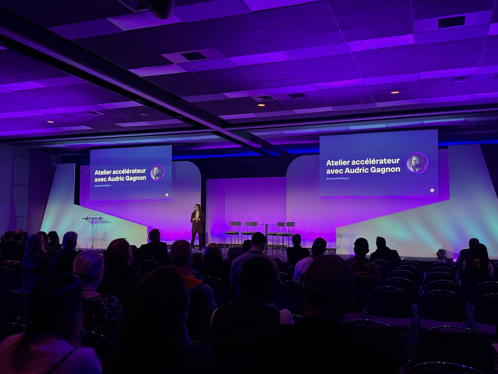
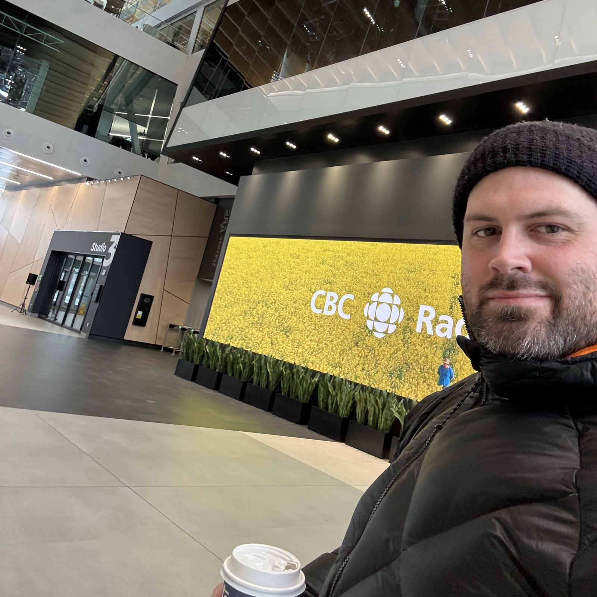
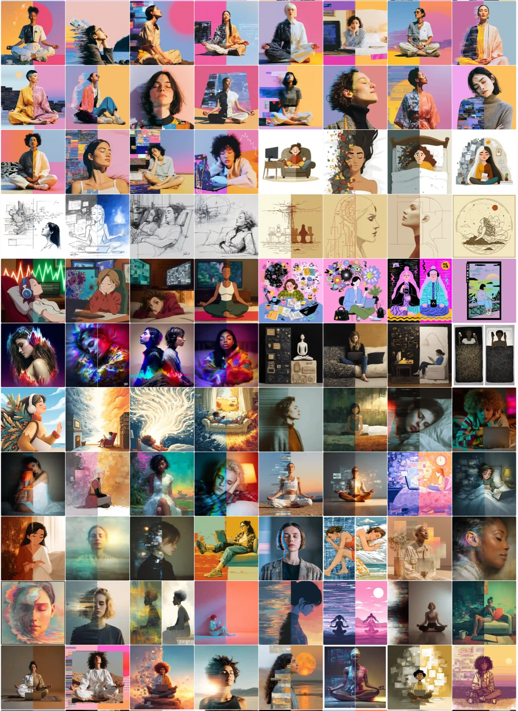
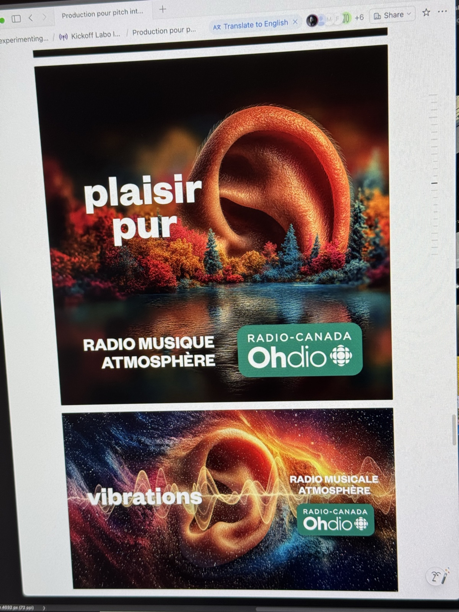

Donner à une équipe créative la permission d'expérimenter — avant de s'engager dans quoi que ce soit.

L'équipe créative de promotion de Radio-Canada — designers, motion designers, réalisateurs, conceptrice-rédactrice, directrice de création — avait la curiosité, mais pas le cadre.
Les outils d'IA étaient explorés individuellement, sans structure. Certains étaient enthousiastes, d'autres prudents. Tout le monde avait des questions.
Concevoir et livrer un kickoff structuré d'expérimentation IA pour une équipe créative multidisciplinaire d'ICI Musique.
L'objectif : aligner l'équipe, créer un élan, et installer les bases d'un projet pilote IA de 6 mois — le tout dans un environnement sécurisé.

Deux journées intensives. Trois sous-groupes travaillant sur un vrai brief pour ICI Musique — du brainstorm à la pré-production assistée par l'IA.
Du vrai travail créatif, sur de vrais projets, avec de vraies contraintes. Un cadre sécurisé — aucun output IA en diffusion, validation humaine obligatoire.


Et les sceptiques? Ils deviennent les participants les plus engagés.
Pas de pitch. Pas de pression. Juste une conversation.
Commencer une conversation →